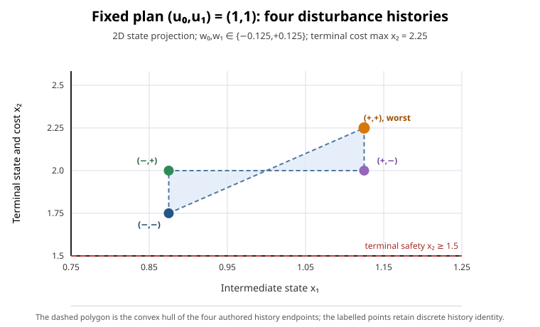

Open-loop robust minimax formulation pilot
Numerical formulation cross-check · timings not measured · Pages publication pending review
Case
Two-stage scalar system x[t+1] = x[t] + u[t] + w[t], initial state 0, ordered finite control catalogue (0, 1, 1), and full interval disturbances [[-0.125, 0.125], [-0.125, 0.125]]. The goal minimizes worst terminal x2 subject to -10 <= x0 <= 10, -10 <= x1 <= 10, 1.5 <= x2 <= 10 for every disturbance history.
The solver and finite oracle enumerate 4 endpoint products of the disturbance intervals. This covers the full intervals in this fixture: states and safety inequalities are affine in disturbances, while the terminal objective is linear, so all extrema over each disturbance box occur at endpoint products.
Results
| Method | Outcome |
|---|---|
| Exhaustive finite-action oracle | 2.25; 4 tied plans out of 9 |
| Shared-selector extensive-form MILP | 2.25 incumbent; 2.25 best bound; reported gap 0 |
| Continuous action-selector relaxation | 2 lower bound |
The interval [2, 2.25] is a lower/upper bound comparison, not a speed ranking. The result uses binary64 numerical evidence, not validated arithmetic.

Reproduce and inspect
Configure a Release build with -DCSL_ENABLE_HIGHS=ON -DCSL_BUILD_MPC03_REPORT=ON, build csl_mpc03_robust_minimax_report, then run it with --smoke. No timing is collected.

Scope limits
This is one synthetic two-stage scalar case, not a B08 reproduction. It does not implement quadratic or norm MIQCPs or the complete issue #599 comparison-record workflow. The Pages route and archive catalogue entry are pending review.